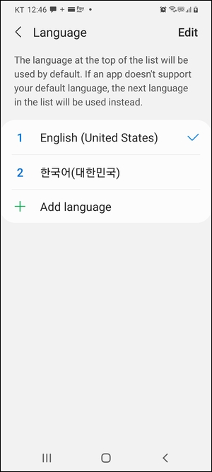
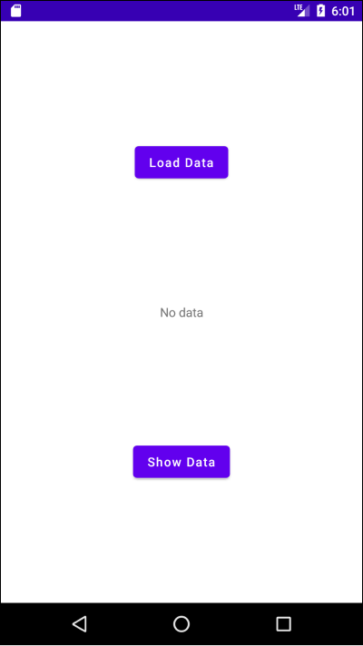
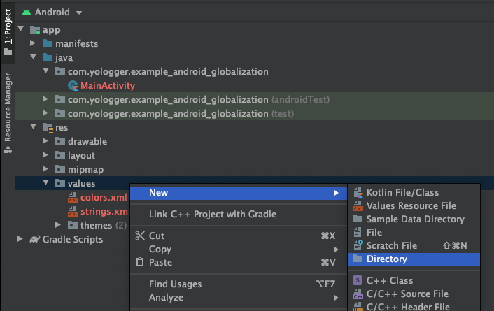
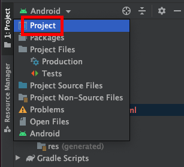
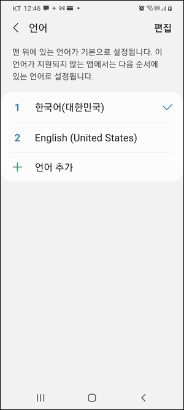
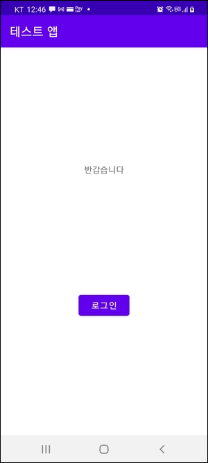

다국어 지원
안드로이드 어플리케이션을 사용하다보면 시스템 언어 설정에 따라 어플리케이션의 언어가 바뀌는 것을 볼 수 있습니다. 이를 다국어 지원(Internationalization)이라고 합니다.
예제
우선 시스템 언어를 영어로 설정합니다. 시스템 언어는 설정 > 일반 > 언어에서 설정할 수 있습니다.

이제 다음과 같이 레이아웃을 구성합니다.

레이아웃에 대한 xml은 다음과 같습니다.
activity_main.xml1
2
3
4
5
6
7
8
9
10
11
12
13
14
15
16
17
18
19
20
21
22
23
24
25
26
27
28
29
30
| <?xml version="1.0" encoding="utf-8"?>
<androidx.constraintlayout.widget.ConstraintLayout xmlns:android="http://schemas.android.com/apk/res/android"
xmlns:app="http://schemas.android.com/apk/res-auto"
xmlns:tools="http://schemas.android.com/tools"
android:layout_width="match_parent"
android:layout_height="match_parent"
tools:context=".MainActivity">
<TextView
android:id="@+id/textview_welcome_message"
android:layout_width="wrap_content"
android:layout_height="wrap_content"
android:text="@string/textview_welcome_message"
app:layout_constraintEnd_toEndOf="parent"
app:layout_constraintStart_toStartOf="parent"
app:layout_constraintTop_toTopOf="parent"
app:layout_constraintBottom_toTopOf="@+id/btn_log_in"
tools:layout_editor_absoluteY="124dp" />
<Button
android:id="@+id/button_login"
android:layout_width="wrap_content"
android:layout_height="wrap_content"
android:text="@string/button_login"
app:layout_constraintTop_toBottomOf="@+id/tv_welcome"
app:layout_constraintBottom_toBottomOf="parent"
app:layout_constraintEnd_toEndOf="parent"
app:layout_constraintStart_toStartOf="parent" />
</androidx.constraintlayout.widget.ConstraintLayout>
|
기본 문자열 리소스는 다음과 같습니다.
/res/values/strings.xml1
2
3
4
5
| <resources>
<string name="app_name">Test App</string>
<string name="textview_welcome">Welcome</string>
<string name="button_login">Log in</string>
</resources>
|
이제 한국어를 지원하기 위해 한국어 문자열 리소스를 추가해야합니다. /res/ 경로에서 [New] > [Directory]를 클릭하고 폴더 이름을 values-ko로 작성합니다.
폴더 이름은 values-[국가코드]입니다. 국가코드는 ISO-639-1 문서를 따르며 이 곳에서 확인할 수 있습니다.


프로젝트 뷰를 Android에서 Project로 변경하면 values-ko폴더가 생성된 것을 확인할 수 있습니다.

이 곳에 한국어에 해당하는 xml 문자열 리소스 파일을 생성해줍니다.

한국어 문자열 리소스는 다음과 같습니다.
/res/values-ko/strings.xml1
2
3
4
5
| <resources>
<string name="app_name">테스트 앱</string>
<string name="textview_welcome">반갑습니다</string>
<string name="button_login">로그인</string>
</resources>
|
이제 시스템 언어를 한국어로 변경합니다.

앱을 실행하면 다음과 같이 한국어 문자열 리소스가 적용됩니다.
